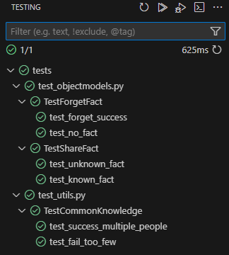
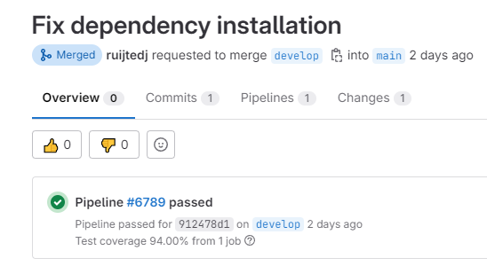
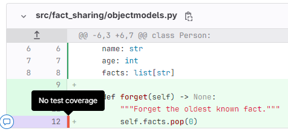
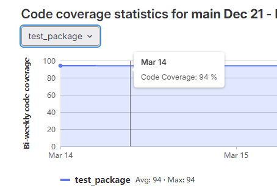

Unit testing
There is multiple types of testing:
- Unit testing, does the function/class behave as expected.
- Integration testing, does the code behave as expected when integrated with other code/databases/API's.
- End-to-end testing, does the complete product behave as expected for the user.
Especially unit tests are easy to implement in your work flow, as they are easy to write and run.
Writing unit tests
What to test?
- Success on likely case with parameters you expect.
- Success on case with empty lists and None (null) for each input.
- If the function can raise exceptions/errors, check if it does.
For example:
class TestForgetFact(unittest.TestCase):
def test_forget_success(self) -> None:
"""Test if it forgets a fact."""
facts = {
"The world's oldest cat lived to 38 years and three days old.",
"Giraffes are 30 times more likely to get hit by lightning than people.",
}
person = Person("Ben", 45, facts)
person.forget_fact()
assert len(person.facts) == 1
def test_no_fact(self) -> None:
"""Test if it doesn't crash when there are no facts."""
person = Person("Ben", 45, [])
try:
person.forget_fact()
except TypeError as e:
msg = "Forgetting empty facts crashed."
raise AssertionError(msg) from e
Structure code for unit tests
It is important that the code is structured in a way that makes it easier to test. This means functions should have a single responsibility, with well-defined in- and outputs and no side effects. Make sure interacting with services or databases is not mixed with business logic.
Single responsibility
When a function does too much work, there is many different combinations to test. For example a function def preprocess() that does:
- Data cleaning
- Data imputation
- Feature engineering
- Logging
You will have to test all the different combinations of inputs parameters for the different steps, blowing up the number of tests you will have to write. This is a integration test and unit test in one. The better approach would be making separate functions for each step and testing them separately. The whole process can be tested in an integration test.
Service interactions and mocking
Avoid mixing in interactions with external services in a function that also contains critical, functional logic. If there is a function def get_data() that both gets the data and does some transformation on it, then the transformation part is hard to unit test.
You can still test a function with side effects by properly using dependency injection and mocking the connection.
Don't do:
def get_data() -> dict[str, int]:
connection = Connection()
api = API(connection)
data = api.retrieve_data()
processed_data = transform(data)
return processed_data
data = get_data()
Do:
def get_data(api: API) -> dict[str, int]:
data = api.retrieve_data()
processed_data = transform(data)
return processed_data
connection = Connection()
api = API(connection)
data = get_data(api)
and the test:
class MockAPI:
def __init__(self, data: dict[str, int]) -> None:
self.data = data
def retrieve_data(self) -> dict[str, int]:
return self.data
def test_get_data():
api = MockAPI({"test":1})
assert get_data(api)
Running the tests
You can always run unit tests from console. Most IDE's have plugins for running unit tests. In this project I used unittest-package to create the unit tests and the pytest package to view and run them in VScode.

It is a good practice to run your unit test before committing new code. It is not advised to add unit tests to the pre-commit hook as described in Linting. The reason is that running unit tests can take several minutes for a big project, which means you will have to wait before pushing.
It is better to run them asynchronously in you CI/CD. The following GitLab snippet will run the tests for this project.
# .gitlab-ci.yml
stages:
- test
test_package:
stage: test
script:
- pip install pytest pytest-cov
- pytest --cov --cov-report term --cov-report xml:coverage.xml
coverage: '/(?i)total.*? (100(?:\.0+)?\%|[1-9]?\d(?:\.\d+)?\%)$/'
artifacts:
reports:
coverage_report:
coverage_format: cobertura
path: coverage.xml
The unit tests have to succeed before you can succesfully merge a Merge Request.
Code coverage
A metric that is handy to measure is the code coverage. This denotes the percentage of the codebase that is covered by unit tests. A team can make agreements about if this metric falls below a certain percentage, tasks regarding creating unit tests should be prioritized.
Most unit testing packages have this included. For python I used pytest-cov and you can generate the report using:
pytest --cov --cov-report term --cov-report xml:coverage.xml
This generate a report which you can upload to GitLab as an artifact. GitLab will include this percentage with Merge Requests.

It also highlights uncovered code in the changes view:

At last there is also a view where you can see the code coverage over time per repo in Analyze/Repository analytics:
